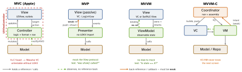
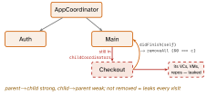

architecture · folio
In one line: All four keep the same Model; they differ in where presentation logic lives and who holds a reference to whom. Each step moves logic out of the UIKit-bound view into a plain, unit-testable object: MVC (controller does it all) → MVP (presenter pushes to a view protocol) → MVVM (view binds to state; VM never sees the view) → MVVM-C (a Coordinator also takes navigation out).
Download PDF Print view LaTeX source


Who knows whom
| MVC | MVP | MVVM | |
|---|---|---|---|
| logic in | Controller (= the VC) | Presenter | ViewModel |
| view is | fused w/ controller | passive, behind a protocol | binds to VM state |
| to view | VC sets outlets | Presenter pushes: view?.show() | View observes (bindings) |
| knows view? | yes, owns it | yes — via protocol (weak) | no |
| test via | UI / host app | mock View, verify calls | assert on state |
| fits | small screens | UIKit, strict tests | SwiftUI, Combine |
- Classic (Smalltalk) MVC: the View observes the Model directly. Apple MVC: Controller mediates both ways, so V and M stay reusable. But
UIViewControlleris view + controller, so networking, parsing, routing pile in → Massive VC: violates SRP, testable only with UIKit. - MVP: View forwards every event, renders only what it is told. Presenter holds
weak var view: LoginView?, formats data, calls explicit methods. No bindings. Presenter imports no UIKit ⇒ fully unit-testable against a mock View. - MVVM: VM exposes formatted observable state + intent methods, holds no view reference and imports no UIKit. Binding tech:
@Observable/@Published+Combine, KVO, closures/Box<T>. SwiftUI binds for free; UIKit has none — add one. - MVVM-C: MVVM solves presentation, not navigation. Coordinator:
childCoordinators, a presenter (UINavigationController),start(). Builds VC+VM, injects deps, performs push/present. VM only signals intent (closure / delegate / Combine subject).
Example — same screen, MVP vs MVVM
// MVP: presenter KNOWS the view (protocol) and PUSHES
protocol LoginView: AnyObject { func show(error: String) }
final class LoginPresenter {
weak var view: LoginView? // VC owns presenter
func loginTapped(_ u: String) {
if u.isEmpty { view?.show(error: "Empty") } }
}
// MVVM: VM knows NOTHING of the view; the view OBSERVES
@Observable final class LoginVM {
var error: String? // bound by the view
var onLoggedIn: (() -> Void)? // intent -> Coordinator
func loginTapped(_ u: String) {
if u.isEmpty { error = "Empty" } else { onLoggedIn?() } }
}Test MVP: spy.shownErrors == ["Empty"]. Test MVVM:
XCTAssertEqual(vm.error, "Empty") — no view at all.
The MVVM-C leak

Traps
- “MVVM is just MVP.” No: Presenter knows the view and pushes; VM has no view ref and the view observes.
- Testability decides it: MVP ≈ MVVM > MVC, because Presenter/VM import no UIKit. That is the whole point of the evolution.
- “MVVM in UIKit just works” — no binding mechanism exists; pick one (Combine
sink/assign, closures, KVO, RxSwift). - VM must not import UIKit nor push screens (that is the Coordinator’s job); its nav closure captures
[weak self]. - MVVM-C leak: child coordinator never removed. System back button and swipe-to-dismiss bypass
didFinish— detect viaUINavigationControllerDelegate didShow/presentationControllerDidDismiss. Remove with===. - Opposite bug: a child coordinator kept only in a local dies after
start()— its screens show, itsweakcallbacks arenil.
Remember
C does it · P pushes it · VM publishes it · Coord
routes it.
Place any pattern: testable without UIKit? holds the view?